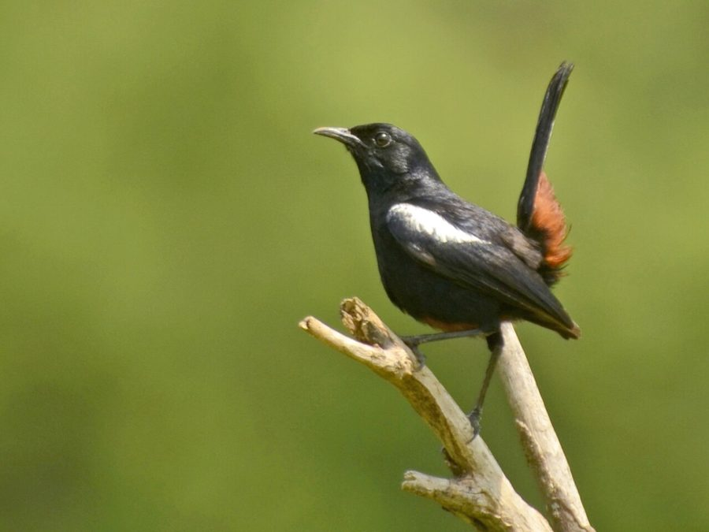

कालचुरीIndian Robin
Copsychus fulicatus · Muscicapidae · BRD-0091

- Scientific name
- Copsychus fulicatus (Linnaeus, 1766)
- Family
- Muscicapidae
- Hindi
- कालचुरी / कलचुड़ी
- Local names
- kalchuri, kalchoori, kalchudi, chirka, kali chidiya
- Status here
- native
- IUCN
- LC
- Review
- audited and independently read
When to look कब देखें
Present all year.
Uses and possibilities उपयोग और संभावनाएँ
Drawn from the documented uses in the profile below, where each is labelled traditional, current or a research lead. All uses →
कालचुरी / Indian Robin
Copsychus fulicatus (Linnaeus, 1766) — Muscicapidae
कालचुरी — गाँव की घर-घर में दिखने वाली काली चिड़िया। नर पक्षी पूरी तरह काली है पर पीठ पर सफेद धब्बे हैं। मादा भूरी है। जमीन पर कूदती है, कीड़े खाती है, और घर की दीवारों में घोंसला बनाती है। इसकी मीठी आवाज़ सुबह सुनाई देती है।
Quick Identification त्वरित पहचान
| Feature | Description |
|---|---|
| Male | Entirely glossy blue-black plumage with striking white patch on lower back and rump |
| Female | Rufous-brown overall with white rump and undertail coverts; white on wing coverts |
| Size | Small-medium thrush (19–21 cm total length); upright posture |
| Head | Round-headed; dark eye with pale orbital ring |
| Tail | Long, held upright or slightly cocked; black (male) or brown (female) |
| Legs and feet | Dark grey to blackish |
| Behaviour | Hops on ground with characteristic bobbing gait; often cocks tail |
Field tip: Look for the upright posture and tail-cocking behaviour. Males are unmistakable — glossy black with white lower back. Females rufous with white rump. Listen for the clear, whistled song from roof-top or wall.
Morphology आकारिकी
Biometrics (nominate subspecies fulicatus, northern India — the form in eastern UP):
| Measurement | Range |
|---|---|
| Total length | 190–210 mm |
| Wing (flattened chord) | 85–95 mm |
| Tail | 90–105 mm |
| Tarsus | 20–22 mm |
| Bill (culmen from base) | 13–16 mm |
| Weight | 24–30 g |
Male plumage: Entire head, neck, breast, upperparts, wings and tail glossy blue-black, sometimes appearing entirely black until light hits it. Lower back and rump bright white — striking contrast. Undertail coverts white, merging into black tail. Flight feathers black.
Female plumage: Head and back rufous-brown. Underparts paler, whitish on throat and belly. Rump and undertail coverts white, as in male. Wings and tail brown. White patch on wing coverts visible in flight.
Juvenile: Duller than female; rump less white.
Bill: Small, pointed, black.
Legs and feet: Dark grey or blackish.
Vocalisations
Indian Robin is a vocal songbird with a clear and melodious repertoire, especially active in early morning.
- Song: A clear, liquid, variable warble — series of whistled notes, pleasant and carried. Often sings from a roof-top or wall-top, especially at dawn and dusk.
- Contact calls: Softer, rapid "chitter-chitter-chit" or "tink-tink-tink".
- Alarm call: A sharper "kit-kit-kit" when predators are sighted.
- Duetting: Pairs sometimes sing in response, creating a duetting effect.
Behaviour & Ecology व्यवहार और पारिस्थितिकी
Ground forager: Spends much time on the ground in open spaces (gardens, courtyards, paths), hopping along and pausing to scan for insects. Uses the characteristic robin-like posture — upright, with frequent tail-cocking.
Insectivore: Feeds primarily on ground-dwelling insects — beetles, grasshoppers, crickets, earwigs, termites, ants. Also takes some small fruits and seeds in non-breeding season.
Territorial: Pairs are highly territorial and resident year-round. Males sing from conspicuous perches to defend territory.
Nesting: Nests in cavities — wall cracks, holes in buildings, pipes, tree holes. Builds a lined nest of grass, hair and feathers. Both parents feed chicks.
Life Cycle / Phenology जीवन चक्र
- February–March: Territory establishment; singing and pairing increases
- March–May: Nest building and egg-laying; females begin sitting
- April–June: Incubation (~13 days); chicks hatch and are fed
- May–July: Fledglings become independent; sometimes second clutch
- August–December: Quieter; post-breeding; pairs remain in territory but less vocal
Host Plants or Prey आहार
Primary diet:
- Ground beetles (numerous species)
- Grasshoppers and crickets
- Termites (especially winged forms during monsoon)
- Ants and small arthropods
- Small seeds and berries (non-breeding season)
Predators / Natural Enemies शत्रु
- Shikra (Accipiter badius) — primary predator; hunts birds on the ground
- House Crow (Corvus splendens) — raids nests for eggs and chicks
- Domestic and feral cats — hunt birds on the ground and at nest sites
- Snakes — raid nest cavities in walls and trees
Agricultural / Human Relevance कृषि प्रासंगिकता
Pest control: Indian Robins consume significant quantities of ground-dwelling insects, including agricultural pests like grasshoppers and beetles. Beneficial in gardens and near cultivated fields.
Cultural significance: The "कालचुरी" is a beloved village bird, known for its clear song and tameness. Mentioned in traditional Hindi verse and folk songs. Historically kept as a cage bird for its song (now illegal under Wildlife Protection Act).
Urban adaptation: Highly habituated to human presence; found in gardens, courtyards and settlements. One of the most common garden birds in eastern UP villages.
Protected status: Schedule IV of Wildlife (Protection) Act, 1972. Nest disturbance and bird trapping are illegal.
Expected Locally स्थानीय रूप से अपेक्षित
Not a field record. Written from published accounts for eastern Uttar Pradesh. No confirmed local sighting yet — if you have seen it, that is what the atlas needs.
अभी तक स्थानीय पुष्टि नहीं। यह विवरण प्रकाशित स्रोतों से है, किसी अवलोकन से नहीं।
Indian Robin is expected year-round in every village and garden throughout Basti and Ayodhya districts. Most visible on the ground in gardens and courtyards, especially early morning and late afternoon. Listen for the clear, melodious song from roof-tops and walls. Watch for the characteristic hopping gait and tail-cocking behaviour on the ground.
Distribution वितरण
Global range: Indian subcontinent — widespread from Afghanistan and Pakistan through India (plains to about 1,500 m), Nepal and Bangladesh. Absent from very dense forests.
In India: Common resident throughout India from the plains up to moderate elevations; absent only from dense forest interiors.
In Uttar Pradesh: Common resident in villages and settled areas throughout the state.
In Basti district / eastern UP: Very common in all villages and gardens; one of the most ubiquitous birds.
Research Questions शोध प्रश्न
- Are Indian Robins common in your village? / आपके गाँव में कितनी कालचुरियाँ हैं? — Count birds in a 30-minute morning walk through the village.
- Where do they nest in homes and gardens? / घर में कहाँ घोंसले बनाती हैं? — Map all nesting sites: wall cracks, pipes, boxes, holes.
- What insects do they eat most? / सबसे ज़्यादा कौन से कीड़े खाती हैं? — Watch ground-foraging birds; note what they pick up; collect droppings for analysis.
- Do males and females sing differently? / नर और मादा अलग तरह गाती है? — Listen and compare songs; no equipment needed.
- How long do pairs stay together? / जोड़े कितने समय साथ रहते हैं? — Track a pair month by month through seasons.
Similar Species मिलती-जुलती प्रजातियाँ
| Species | How to tell apart | हिंदी |
|---|---|---|
| Magpie-Robin (Copsychus saularis) — if found | Similar size; white wing patch and breast; found in wetter forests | जंगली कालचुरी — सफेद छाती |
| Pied Bushchat (Saxicola caprata) — if found | Male black and white; female brown and white; smaller (13 cm); grassland bird | पाँच बंद बुलबुल — छोटा, मैदान में |
Field rule: Small upright bird with characteristic tail-cocking + glossy black male with white rump (or rufous female with white rump) + clear whistled song = Indian Robin. The combination of tail-cocking behaviour and white rump is diagnostic.
Taxonomy & Classification वर्गीकरण
Original description. Copsychus fulicatus was described by Linnaeus in 1766 as Turdus fulicatus, based on specimens from India. The genus Copsychus was erected later and contains several thrush-like birds.
Subspecies. Several subspecies recognised; fulicatus is the nominate form occurring across northern and central India.
Family and order placement. Order Passeriformes; family Muscicapidae (flycatchers, chats, robins, nightingales, and relatives). The genus Copsychus is related to the African magpie-robin but is now considered a separate lineage.
Phylogenetic notes. Molecular studies show Copsychus is nested within Muscicapidae, related to the Old World flycatcher clade.
IUCN status rationale. Assessed as Least Concern. The species is abundant and widespread; populations have likely increased with human settlement expansion.
Photo Gallery फोटो गैलरी
Note: Add field photos tomedia/species/indian_robin/
फोटो निर्देश: नर पास से (काली चमकदार पंखें और सफेद पीठ दिखाते हुए), मादा (भूरी + सफेद रुँप), जमीन पर कूदते हुए, और पूँछ ऊपर करते हुए।
Photos needed आवश्यक फोटो
- [ ] Male close-up showing glossy black and white rump (काली + सफेद पीठ)
- [ ] Female showing rufous and white (भूरी + सफेद)
- [ ] Hopping on ground (जमीन पर)
- [ ] Tail cocked up (पूँछ उपर)
- [ ] At nest hole (घोंसले के छेद पर)
References संदर्भ
- Linnaeus, C. (1766). Systema Naturae per regna tria naturae. Editio Duodecima, Reformata. Laurentii Salvii, Holmiae, p. 292. [original description]
- Ali, S. & Ripley, S.D. (1987). Handbook of the Birds of India and Pakistan. Vol. 7. Oxford University Press, New Delhi.
- Grimmett, R., Inskipp, C. & Inskipp, T. (2011). Birds of the Indian Subcontinent. 2nd ed. Christopher Helm, London.
- Rasmussen, P.C. & Anderton, J.C. (2005). Birds of South Asia: The Ripley Guide. Smithsonian Institution, Washington.
- Clement, P. & Sharpe, C.J. (1992). Family Muscicapidae (Old World flycatchers). In: Handbook of the Birds of the World Vol. 8 (pp. 48–211). Lynx Edicions, Barcelona.
- BirdLife International (2024). Copsychus fulicatus. IUCN Red List of Threatened Species. Ver. 2024.
- GBIF Occurrence Data — Copsychus fulicatus, Uttar Pradesh (2010–2025).
Source file: species/fauna/birds/indian_robin.md